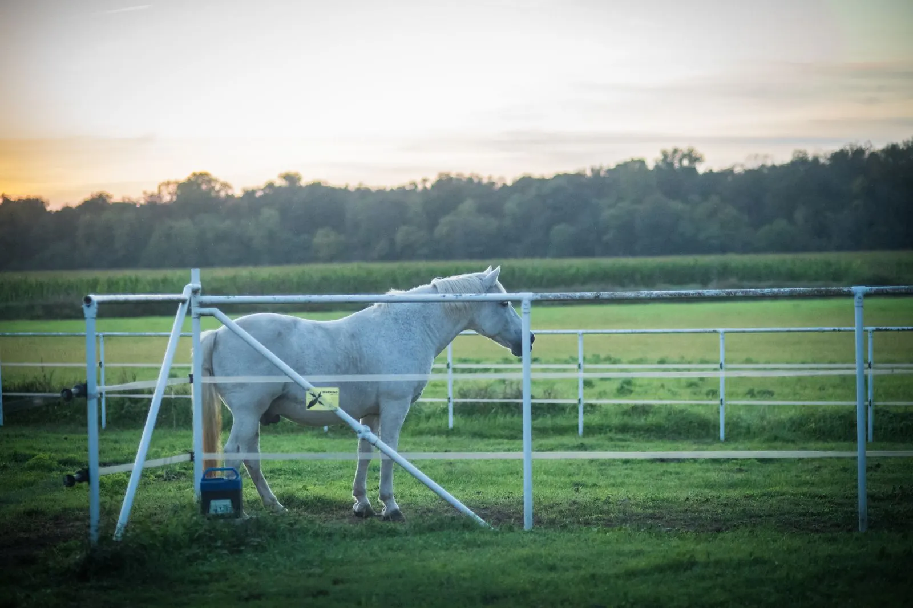

Articles · Family
A farm stay with children: the perfect day at Beatilla
The countryside is the original playground: real animals, room to run, a forest to explore. Here is how it all fits together — cots ready, ice cream in the right place.

There is something children grasp instantly that adults need explained again: the countryside is not «less city» — it is a whole world, with rules of its own and surprises everywhere. We see it at every arrival at Beatilla: the time it takes to get out of the car, and the little ones have already found the horse, the garden, the room to run.
Morning: the farm and the forest
Start slow: breakfast arrives in a basket at your door, at the time you choose — which, with children, is a detail worth gold. Then Farm Visiting, on request: the animals, the vegetable garden, the true rhythms of the countryside, beehives included, watching up close how a farm works.
A short walk away is the Bosco della Fontana: you reach it on foot from the farmhouse, the paths are flat enough for a pushchair, and the hunting castle at the centre turns the walk into an expedition. No child stays indifferent to a forest with a castle inside.
Afternoon: pedals or outings
Options split by age and energy: a short stretch of the cycle path with hired bikes, or the outings — Gardaland is about half an hour away, so is the Sigurtà Garden Park, and the boats on Mantua's lakes are the trip that pleases everyone, herons included.
The practical things
The ones parents check first: cots on request, apartments with a fully equipped kitchen for little ones' dinners, the big garden for the evening, and the not-small fact that here space never runs out.
At a glance
- At the farm
- animals, garden, Farm Visiting on request
- On foot
- the Bosco della Fontana, pushchair-friendly flat paths
- Outings
- Gardaland and the Sigurtà Park about half an hour away, boats in Mantua
- Sleeping
- cots on request, apartments with kitchens
The perfect day with children is not the full one: it is the one with the right space between things. Here, space is the host — we take care of the rest.
Bring the children where there is room to run —
we will see to the rest, cots included.